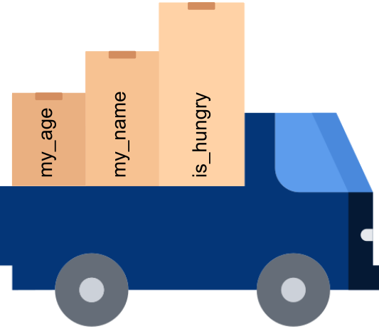

a = [1, 3, 9, 27]
b = (1, 3, 9, 27)
c = list(b)
print(a, b, c)[1, 3, 9, 27] (1, 3, 9, 27) [1, 3, 9, 27]
Collections allow us to move groups of information.
We will explore Tuples, Lists, Sets, Dictionaries. Other useful collections include Arrays and DataFrames.
Lists and tuples are both an ordered collection of any number and any type of items.
my_list = [val1, 'val2', 3]
my_tuple = (val1, 'val2', 3)
These collections can be created directly using their parentheses. You can also use the equivalent built-in function to convert between collection types:
[1, 3, 9, 27] (1, 3, 9, 27) [1, 3, 9, 27]The key difference between these two collections is mutability.Individual elements of lists can be updated, added or removed after creation making them mutable. In contrast, tuples are immutable - items can be retreived but not altered.
We can access individual elements in lists or tuples according to their index.
However, remember they are immutable:
--------------------------------------------------------------------------- TypeError Traceback (most recent call last) Cell In[7], line 1 ----> 1 c[2] = 'hello' TypeError: 'tuple' object does not support item assignment
Strings are essentially a tuple of characters that can be sliced and indexed.
First: G Slice: T CTA Another slice: GAHowever, remember they are immutable:
--------------------------------------------------------------------------- TypeError Traceback (most recent call last) Cell In[9], line 1 ----> 1 my_seq[3] = 'g' TypeError: 'str' object does not support item assignment
in operator:
Sets are an unordered collection of unique elements.
my_set = {val1, val2, val3}
Python gives you access to a range of mathematical operations applicable to sets, including union, intersection, and difference.
Let’s look at sets in action:
Union: {2, 4, 5, 6, 7, 8, 10}
Intersection: {4, 6}Dictionaries offer a way to access information by name rather than index:
dictionary = {key : value}
Keys must be unique and immutable, but values can be of any data type.
Let’s see a few ways to add information to a dictionary:
We can access the value associated with a key:
1.2548If you try to retrieve a key that doesn’t exist, you will receive a KeyError.
--------------------------------------------------------------------------- KeyError Traceback (most recent call last) Cell In[14], line 1 ----> 1 print(genes['HSP90']) KeyError: 'HSP90'
… unless you use the .get() method!
You can get a list of keys, values and even matched key-value pairs.
dict_items([('HSP70A1A', 1.2548), ('TMEM218', 0.5273), ('MYMK', -0.4869), ('SNAP23', 0.6749), ('TAF4', -2.6487)])2.1 Lists
2.2 Sets
2.3 Dictionaries